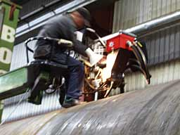

All
photographs
© 1999 Soren Krohn

Welding
Wind Turbine Towers
Steel
Sections are Powder Welded
 Each
tower section is welded with a seam lengthwise, plus a circular
welding seam to connect to the next section of the tower. This
is done by placing the tower sections on a rolling bed which
slowly rotates the tower, while an operator with a powder welding
machine welds the sections from the outside...
Each
tower section is welded with a seam lengthwise, plus a circular
welding seam to connect to the next section of the tower. This
is done by placing the tower sections on a rolling bed which
slowly rotates the tower, while an operator with a powder welding
machine welds the sections from the outside...
Checking
Welding Seams for Safety
Welding seams in towers are checked using ultrasonic
or x-ray devices. Important seams are checked 100%, while other
seams are checked on a sample basis.
© Copyright 1999 Soren Krohn
Updated 6 August 2000
http://www.windpower.org/tour/manu/towerwld.htm